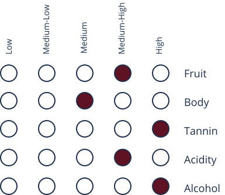
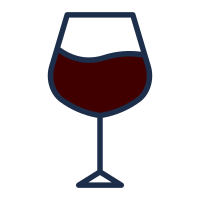
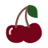

About
Amarone also known as Amarone della Valpolicella, is a highly sought after wine that was created by mistake in 1936. The cellar master of Villa Masconi Bertani, Adelino Leccese found a forgotten barrel of wine that was presumed to be rancid. Thankfully, he tasted the wine and realized it was very pleasant and dry. The name Amarone means “The Great Bitter” coined by Leccese when he first tasted the wine. In 1953 regular production of Amarone commenced and has since been granted a DOCG recognition.
Taste Profile
Amarone
"ah-mah-ROH-nay"
Dominant Flavors
- 
Black Cherry
Brown Sugar
Chocolate
Grapes
- Corvina and Corvinone:
contain cherry, spice, and green almond nodes - Rondinella
contain floral aromas - Molinara:
contain cinnamon, pepper and citrus aromas
Pairings
- Cheese:
Parmigiano Reggiano, Cimbro, Pecorino vecchio, Gouda, Gorgonzola, Stilton, and Roquefort - Meat:
beef, beefsteak, horse meat, lamb, veal, rabbit, wild boar and deer - Poultry:
ostrich, pheasant, duck and foie gras - Pasta:
Any pasta with tomato or truffle sauce
Serving
18℃- 20℃
Burgundy Glass
Regions
Veneto